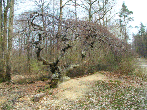
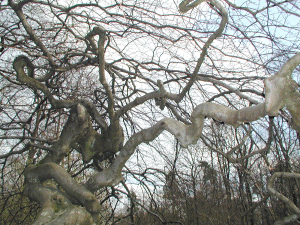
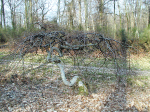
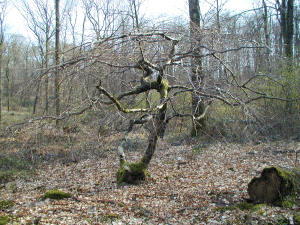
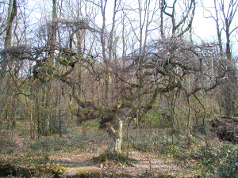
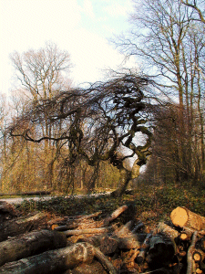
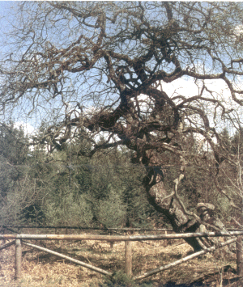

|

Le tout premier, on photographie en attendant de
trouver plus grand ...
|

Les bifurcations sont surprenantes...
|
|

Tout petit mais sans doute déjà
âgé...
|

Un rejet sur une souche...
|
|

Le plus symétrique...
|

Le plus joli... en fin de balade quand nous
étions découragés de tant marcher !
|
|

Voilà le "chêne faux "que nous
aurions pu voir ... scanné sur un dépliant
édité par le Comité
Départemental du Tourisme (Marne)
Nouveau !
Nous sommes
retournés en Champagne pour la Toussaint et, cette
fois nous avons vu les "vrais faux" !
Cliquez sur le
smiley ! j'ai "bricolé" un diaporama à ma
façon .
|
La Forêt Domaniale de Verzy composée
de divers bois provenant notamment de la Commanderie du
Temple occupe une place privilégiée dans le
Parc Naturel Régional de la Montagne de Reims.
Implantée sur un plateau se terminant en coteau
abrupt sur lequel s'accroche le vignoble champenois, elle
occupe la pointe est de l'Ile de France et culmine à
288 m d'altitude.
On y trouve la principale station de Faux du
monde.
Le phénomène "tortillard" est mal
connu mais ce caractère est
héréditaire. La reproduction de ces arbres est
assurée par marcottage bien qu'ils soient fertiles.
Le site est classé en Réserve
Biologique Domaniale.
Chaque image peut
être agrandie en cliquant ; mais n'oubliez pas de
fermer la fenêtre ensuite.
Si vous êtes
entrés directement sur cette page cliquez ici pour aller à l'entrée du site
et continuer cette promenade.
|